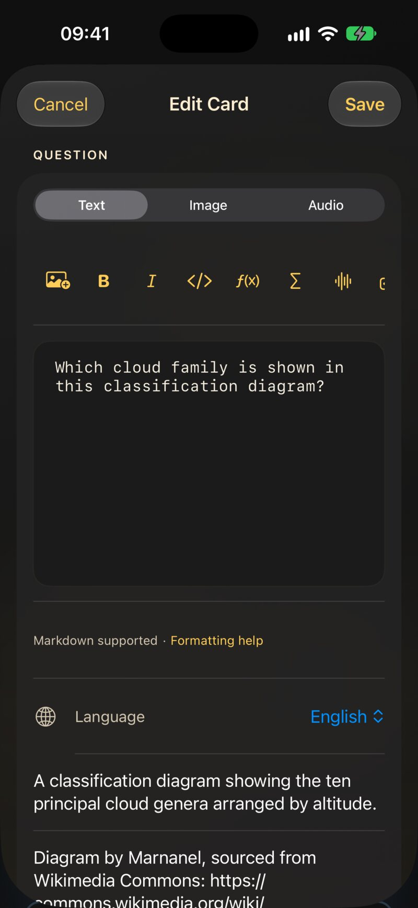
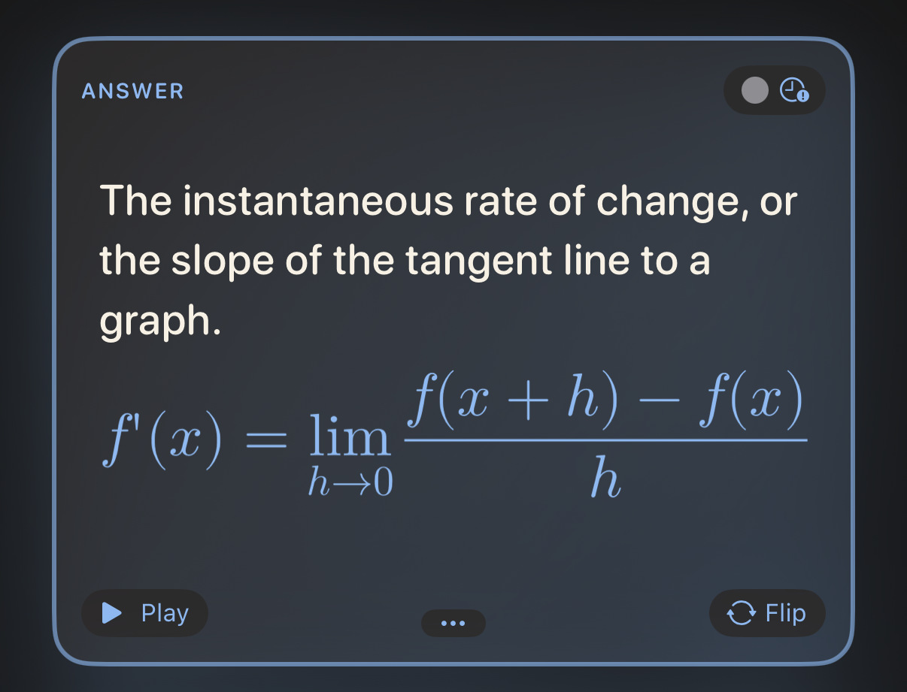
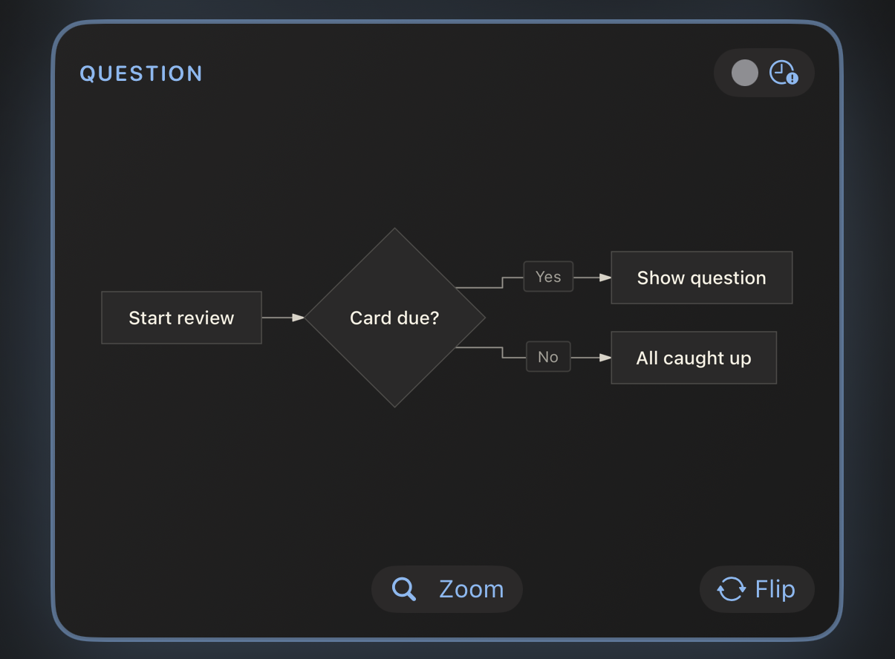

3.1 L’éditeur de carte en un coup d’œil

Chaque carte a deux côtés, Question et Réponse, et chaque côté se modifie séparément. Un côté comporte trois onglets :
- Texte — ce que tu tapes, avec la barre de mise en forme au-dessus.
- Image — une image depuis Photos (ou collée dans le texte).
- Audio — un fichier audio, par exemple
.mp3,.m4aou.wav.
Sous le champ de texte, tu trouveras Aide à la mise en forme — une version de poche de ce chapitre, toujours à portée de doigt — et la Langue du côté.
Un côté ne peut pas être vide : la question comme la réponse ont besoin d’un texte, d’une image ou d’un son pour que Enregistrer s’active. L’onglet depuis lequel tu enregistres compte aussi — le chapitre 4 explique comment combiner du texte avec une image ou un son sans perdre ni l’un ni l’autre.
3.1.1 La barre d’outils
Tu n’as jamais besoin de retenir le balisage. La barre d’outils au-dessus du champ de texte l’insère pour toi, autour de ce que tu as sélectionné. Elle défile horizontalement ; de gauche à droite :
| Bouton | Insère |
|---|---|
| Image | l’image du côté, à l’emplacement du curseur |
| B / I | **gras** / *italique* |
</> |
`code en ligne` |
| f(x) / Σ | $maths en ligne$ / un bloc de maths
$$ |
| Forme d’onde | [affiché]{prononcé} — un indice parlé |
| Texte à trous | {{c1::…}} — un trou à remplir |
| Lien | [libellé](https://…) |
| Tableau | un tableau à deux colonnes |
| Diagramme | un bloc de diagramme mermaid |
| Grand texte | un bloc ::: hero |
3.1.2 La langue compte
Le sélecteur Langue indique à JustFlip! quelle voix doit lire ce côté à voix haute, et chaque côté a la sienne — un mot espagnol au recto, sa traduction française au verso.
Une nouvelle carte démarre avec sa langue réglée sur Aucune, et un côté sans langue n’est tout simplement pas lu — ni par le bouton haut-parleur, ni par Lire les cartes. Si une carte reste muette, vérifie d’abord sa langue.
3.1.3 Tags et drapeaux
Les tags se saisissent dans un champ à pastilles : appuie sur Retour,
sur le bouton + ou tape une virgule pour transformer le
texte en tag. Colle verbes, irréguliers, A2 et tu obtiens
trois pastilles d’un coup. La casse n’a pas d’importance et les doublons
sont supprimés. Un drapeau de couleur fait ressortir une carte quand tu
parcours un paquet.
3.2 Un texte qui rend bien
Le texte des cartes est du Markdown, simplifié pour les petits écrans. Voici tout ce qui façonne le texte simple :
Les mitochondries sont la **centrale
énergétique** de la *cellule*. La
fonction est `atp_synthase()`.Les mitochondries sont la centrale énergétique de la
cellule. La fonction est atp_synthase().
**gras**et*italique*— pour mettre en valeur.`code`— un extrait en police à chasse fixe.\*— une barre oblique inverse affiche le caractère suivant tel quel :\*pas en italique\*garde donc ses astérisques.- Une ligne vide commence un nouveau paragraphe ; un simple retour à la ligne est conservé tel quel.
Les cartes sont petites, donc certaines habitudes Markdown ne s’y
appliquent pas. Une ligne qui commence par # s’affiche en
texte simple — les dièses sont retirés, il n’y a pas de titres sur une
carte. Les marqueurs de liste comme - ou 1.
apparaissent exactement comme tu les as tapés, ce qui est généralement
ce que tu veux de toute façon.
3.2.1 Liens
[le guide](https://example.com) affiche le
guide sous forme de lien touchable. Les liens web
(https://), e-mail (mailto:) et téléphone
(tel:) fonctionnent ; tout autre type de lien s’affiche en
texte simple.
3.3 Textes à trous
Une carte à trous masque une partie d’une phrase. La question affiche un trou ; retourner la carte révèle les mots manquants, mis en évidence. C’est le moyen le plus rapide de transformer un paragraphe de notes en quelque chose sur quoi tu peux être interrogé.
La capitale de la France
est {{c1::Paris}}.La capitale de la France est […].
Ajoute un indice après une deuxième paire de deux-points. L’indice apparaît dans le trou, et c’est ce que la voix prononce à la place du mot « trou » :
{{c1::Les mitochondries::organites}}
produisent l’essentiel de l’ATP
de la cellule.[organites] produisent l’essentiel de l’ATP de la cellule.
Quand la carte est retournée, la phrase entière revient avec les réponses mises en évidence — Les mitochondries produisent l’essentiel de l’ATP de la cellule. Le côté Réponse d’une carte à trous est facultatif. Tout ce que tu y écris s’affiche sous la phrase révélée, comme notes supplémentaires.
Numérote tes trous c1, c2, c3…
— mais dans JustFlip!, tous les trous d’une même carte sont masqués et
révélés en même temps, et la carte est révisée comme un seul
élément. Tu veux être interrogé sur chaque trou séparément ? Fais une
carte par trou.
Les utilisateurs d’Anki connaissent l’autre comportement : là-bas, chaque numéro devient une carte à part. C’est exactement ce qui se passe quand tu importes une note à trous d’Anki — elle est découpée en une carte par numéro, si bien que rien de ce que tu as étudié dans Anki n’est perdu.
Quelques détails qui t’éviteront de te creuser la tête :
- Seuls les trous bien formés comptent.
{{c0::x}},{{c1::}}ou{{not a cloze}}s’affichent tels quels, accolades comprises. - Besoin des accolades elles-mêmes ? Écris
\{\{c1::…}}. - Dans le code et les maths,
{{c1::…}}n’est pas touché — il reste tel quel.
3.4 En grand et centré
Certaines cartes tiennent en un seul caractère : un kana, un kanji, un symbole chimique, un nom d’accord. Place-le dans un bloc hero et il remplit la carte :
::: hero
あ
:::あ
::: center fait la même chose sans changer la taille —
le contenu est simplement centré. Ouvre le bloc avec
::: hero ou ::: center sur sa propre ligne et
ferme-le avec :::.
Garde les éventuelles notes en dehors du bloc, pour qu’elles restent en texte normal, et évite le gras ou l’italique dans un bloc hero. À cette taille, ils n’ajoutent que du bruit.
3.5 Maths
JustFlip! compose les maths avec la syntaxe TeX, la notation utilisée
par les mathématiciens du monde entier. Entoure une formule de dollars
simples pour la garder dans la ligne, ou place-la entre des lignes
$$ pour lui donner sa propre ligne centrée :
La dérivée :
$$
f'(x) = \lim_{h\to 0}\frac{f(x+h)-f(x)}{h}
$$La dérivée :

Les maths en ligne fonctionnent de la même façon :
$E = mc^2$ devient
en plein milieu de la phrase. Comment faire en sorte qu’une formule
sonne juste quand elle est lue à voix haute, c’est l’objet de
Dire à la voix quoi prononcer.
3.6 Code
Encadre le code avec trois accents graves et indique le langage après les accents d’ouverture. JustFlip! colore les mots-clés, les chaînes, les commentaires, les nombres et les types :
```swift
let answer = 6 * 7
// prints 42
print(answer)
```let answer = 6 * 7
// prints 42
print(answer)Noms de langages reconnus : Swift, Python, JavaScript, TypeScript, Java, Kotlin, C, C++, C#, Objective-C, Go, Rust, Ruby, PHP, SQL, Bash, Smalltalk/Pharo, JSON et YAML. Un nom inconnu ou absent te donne quand même un bloc propre à chasse fixe — simplement sans couleurs. Le texte d’un bloc de code s’affiche exactement tel qu’il est écrit ; aucun balisage n’y est appliqué.
3.7 Diagrammes
Un bloc de code nommé mermaid ne s’affiche pas du tout
comme du code — JustFlip! le dessine. Organigrammes, diagrammes de
séquence, d’états, de classes et entité-association sont tous pris en
charge.
```mermaid
graph TD
A[Start review] --> B{Card due?}
B -->|Yes| C[Show question]
B -->|No| D[All caught up]
```
Vise environ huit boîtes avec des libellés courts. Commence par
graph TD (de haut en bas) ; JustFlip! peut faire pivoter un
organigramme quand il tient mieux ainsi sur la carte. Pour les détails,
le bouton Zoomer ouvre le diagramme en plein écran.
3.8 Tableaux
Les petites comparaisons se lisent mieux sous forme de tableau. Laisse une ligne vide au-dessus ; la première ligne est l’en-tête et s’affiche en gras :
| Temps | Forme |
|---|---|
| Présent | je vais |
| Imparfait | j’allais |
| Passé composé | je suis allé || Temps | Forme |
|---|---|
| Présent | je vais |
| Imparfait | j’allais |
| Passé composé | je suis allé |
Les cellules acceptent la même mise en forme que le reste de la carte
— gras, code, maths. Pour afficher un | dans une cellule,
écris \|.
Un tableau sur une carte compte au plus 2 colonnes et 5
lignes, en-tête compris. Tout ce qui dépasse est omis et
signalé par des points de suspension. Les deux-points d’alignement comme
|:---|---:| sont acceptés, mais les colonnes sont toujours
alignées à gauche. Un tableau plus grand est généralement le signe que
la carte veut devenir plusieurs cartes.
3.9 Images
Chaque côté d’une carte contient une image. Ajoute-la dans l’onglet Image, ou avec le bouton image de la barre d’outils du texte, qui insère aussi un marqueur dans le texte :
Quel est cet oiseau ?
![attachment:0]Le marqueur, ![attachment:0], décide où l’image
se place dans le texte. Un marqueur sans image derrière n’affiche
simplement rien.
L’image a aussi un champ description. VoiceOver le lit aux personnes qui ne peuvent pas voir l’image : il vaut donc la peine d’y mettre quelques mots.
Une carte affiche ton image exactement telle qu’elle est, sans fond derrière. Des traits noirs sur fond transparent rendent parfaitement sur une carte claire et disparaissent complètement sur une carte sombre. Donne aux diagrammes, aux notations et aux dessins au trait un fond blanc uni avant de les ajouter.
Utilise des photos et des images matricielles (PNG, JPEG). Les fichiers SVG ne sont pas pris en charge. Inutile de réduire les grandes photos avant : JustFlip! ramène une image à 3 000 pixels sur son grand côté lorsque tu enregistres, ce qui garde la synchronisation iCloud rapide sur tous tes appareils. Le chapitre 4 en dit plus sur les images qui fonctionnent bien.
3.10 Dire à la voix quoi prononcer
JustFlip! peut lire n’importe quelle carte à voix haute, avec la voix de la langue de ce côté. En général, elle s’en sort bien. Quand ce n’est pas le cas — un sigle, un symbole, une formule — tu peux lui donner un indice parlé : des accolades juste après quelque chose disent à la voix de prononcer ceci à la place.
Active l’actualisation en
arrière-plan sur [iOS]{aïe o èsse}.Active l’actualisation en arrière-plan sur iOS.
La voix dit “Active l’actualisation en arrière-plan sur aïe o èsse.”
La carte affiche toujours iOS ; la voix dit « aïe o èsse ». La même règle fonctionne à exactement quatre endroits :
| Où | Tu écris |
|---|---|
| N’importe quel texte, entre crochets | [do♯ mineur]{do dièse mineur} |
| Maths en ligne | $c^2${c au carré} |
Un bloc de maths — après le $$ de fermeture |
$${V égale S p v} |
| Une image | ![attachment:0]{une pomme rouge} |
Sans indice, le texte est lu normalement, les maths sont lues à partir de leur source, et les images restent muettes.
Un indice ne fonctionne qu’à ces quatre endroits. Après du gras, de l’italique ou du texte nu, les accolades s’affichent sur la carte :
*fa♯ majeur*{fa dièse majeur}→ la carte affiche fa♯ majeur{fa dièse majeur}*[fa♯ majeur]{fa dièse majeur}*→ la carte affiche fa♯ majeur et la voix dit « fa dièse majeur »
Dans le doute, utilise des crochets. Mets toute mise en forme à l’extérieur.
Les indices servent pour les dièses et bémols musicaux, les formules, les abréviations et les syllabes romanisées — tout ce sur quoi la synthèse vocale trébuche. Inutile de répéter ce qui est déjà écrit. Et pour de meilleures voix en général, télécharge une voix améliorée ou premium dans les réglages du système, sous Accessibilité › Lire et énoncer › Voix, puis choisis-la dans JustFlip! sous Réglages › Parole › Voix.
3.11 Quand une carte est trop longue
JustFlip! essaie d’abord de tout faire tenir sur la carte. Si le texte ne tient pas, il rétrécit légèrement, jusqu’à 80 % de la taille normale. S’il ne tient toujours pas, le texte est coupé à la dernière ligne complète et le bas de la carte s’estompe en fondu.
Rien n’est perdu pour autant. Le bouton ••• en bas d’une carte ouvre tout le contenu de ce côté dans une feuille. Sur une carte dont le diagramme ou l’image tient, ce même emplacement affiche Zoomer à la place, qui ouvre l’image en plein écran.
C’est un filet de sécurité, pas un style d’écriture. Une carte qu’on ne peut pas lire d’un coup d’œil, ce sont généralement deux ou trois cartes qui se font passer pour une seule.
3.12 Des cartes que ta mémoire gardera
La mise en forme rend une carte agréable. Ces habitudes la rendent efficace :
- Un fait par carte. « Quels sont les trois pouvoirs de l’État ? » est une carte qui échoue une fois sur deux. Trois cartes, une par pouvoir, réussissent chacune de leur côté.
- Pose des questions précises. Une question qui admet deux bonnes réponses ne t’apprendra ni l’une ni l’autre. Ajoute du contexte — ou un indice de trou — jusqu’à ce qu’une seule réponse convienne.
- Utilise tes propres mots. Reformuler, c’est déjà une première répétition, et elle est gratuite.
- Ajoute une image ou un son chaque fois que la chose est visuelle ou sonore : un oiseau, un accord, une prononciation.
- Garde des questions uniques au sein d’un paquet.
Quand tu importes un fichier de paquet (chapitre 5), une carte dont le texte de question correspond à celui d’une carte déjà présente dans ce paquet met à jour cette carte au lieu d’en ajouter une nouvelle. Cela rend la réimportation d’un paquet sans risque. Mais cela signifie aussi que deux cartes avec exactement le même texte de question — « Nomme cette note. », par exemple — n’en font plus qu’une. Mets plutôt la consigne commune dans le nom du paquet, ou laisse le texte de question vide sur les cartes qui n’ont qu’une image.
3.13 Aide-mémoire
| Tu écris | Tu obtiens |
|---|---|
**gras** · *italique* |
gras · italique |
`code` |
extrait à chasse fixe |
\* |
un * tel quel |
[libellé](https://…) |
un lien (https, mailto,
tel) |
{{c1::réponse}} |
un trou, révélé au retournement |
{{c1::réponse::indice}} |
un trou qui affiche un indice |
::: hero … ::: |
contenu très grand et centré |
::: center … ::: |
contenu centré |
$x^2$ |
maths en ligne |
$$ … $$ |
un bloc de maths centré |
```swift … ``` |
code coloré |
```mermaid … ``` |
un diagramme |
| A | B | + |---|---| |
un tableau, 2 × 5 max. |
![attachment:0] |
l’image du côté, ici |
[affiché]{prononcé} |
prononcer autre chose à voix haute |
$x^2${x au carré} |
une formule prononcée |
![attachment:0]{une pomme rouge} |
une image prononcée |